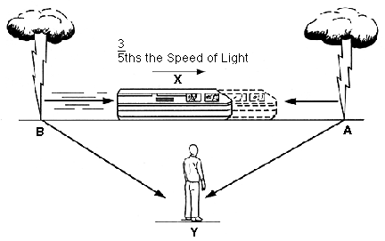

Figure 7-1
In Einstein's special train example, the light from A will arrive at X before that from B. Hence X will observe the lightning at A as happening before that at B. Y, however, will observe the bolts of lightning to be simultaneous. An example of how observations from reference frames moving at great speeds relative to each other reveal a different timing of events.